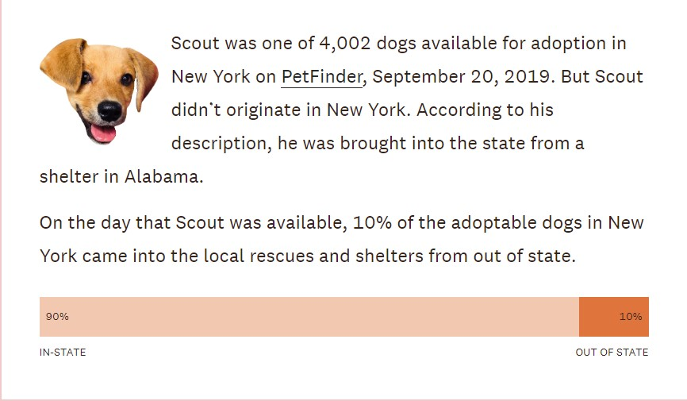

If you’re looking to add a new furry friend to your family, you may be encouraged to “adopt not shop”. That is, to find a new dog at a local shelter or rescue organization rather than a pet store or breeder.
But where do adoptable dogs in New York come from?
 The data is to understand the importance related to adoption of dogs. It starts with the story of Scout, who was one of 4.002 dogs available for adoption in New York on Petfinder. Author is trying to understand from where did these dogs camefrom if they weren’t strays or surrendered by their owners locally. He looks at the PetFinder profiles of all 58,000 dogs available for adoption across the US on a single day and found 2,460 dogs whose travel was described in enough detail to follow.
This question can be complicated, so let’s start with one dog.
Each dog above is depicted by an icon that is most visually similar to the presumed primary breed of the dog. Each import into the state was determined by parsing the PetFinder description for each animal.
All dogs displayed as exported from a particular state are also depicted as imported to another state. In this graphic, there are more imports displayed than exports since some imported dogs came from outside the US. Further, US Territories are not displayed here, since we only collected import data for the 50 US states and Washington DC. Each import into the state was determined by parsing the PetFinder description for each animal available for adoption within that state.
- Space = Web
- Structure = Rectangle
- Mark = Picture, Square
- Position = x: Location, y: Imported, Exported
- Color = Red & Blue
- Annotation = Rectangular annotation
Annotation is represented in the form of rectangualr box where you would be able to see the details of each box,
i.e Male female, Sex, Location and No. of breeds.
Imported and Exported Dogs
BACK